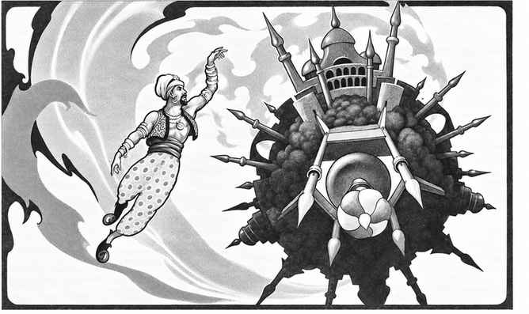

元素空气位面 · The Plane of Elemental Air
元素空气位面是所有内层位面中最适合原初位面生物的一个。这里的物质可以呼吸，旅行也相对容易；空气元素、风巨灵、空气元素公爵、尘魔、无形追猎者等生物能够在此召来元素生物。许多非本土神祇也把这里作为领域，包括拉文、亨托尔、图拉、风暴之神与东方神话中的舒、风神、风伯和雷神。
旅行者最先注意到这里的蓝色。原初位面的天空蓝色在此变成环绕四周的深蓝穹顶，远处的物质会变成更浅或更深的蓝色。旅行者向外移动时，空气逐渐变冷，水汽形成冰晶；向另一方向移动时，空气变热，冰晶变成冰雹，最终进入准元素闪电位面的风暴云。
